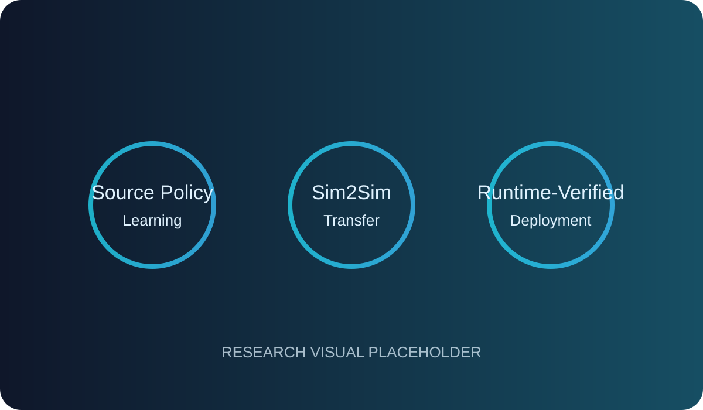

Deep Reinforcement Learning
Policy optimization, reward design, uncertainty-aware exploration and reliable closed-loop decision making.
I work on reliable policy transfer for safety-critical embodied autonomy, with a focus on deep reinforcement learning, Sim2Real/Sim2Sim transfer, uncertainty-aware control, UAVs, autonomous driving, robotic manipulation, and humanoid robotics.
My academic work connects policy learning, domain shift, safety, reliability and deployment-oriented evaluation across embodied autonomous systems.
I am pursuing a Ph.D. in Computer Science and Technology at Shenzhen University. My core interests are Artificial Intelligence, Deep Reinforcement Learning and Simulation-to-Reality policy transfer for safety-critical embodied autonomy.
My work spans UAV autonomy, end-to-end autonomous driving, robotic manipulation and humanoid robotics, with emphasis on robust policy learning, uncertainty and risk, closed-loop evaluation, runtime verification and deployment-aware system design.
Alongside research, I have extensive experience in teaching, technical training, curriculum development, mentoring and coordination, including professional instruction across hundreds of training batches.

A research portfolio centered on learning, transfer and assurance for autonomous systems that must operate under domain shift and safety constraints.
Policy optimization, reward design, uncertainty-aware exploration and reliable closed-loop decision making.
Transfer interfaces and adaptation strategies that diagnose, reduce and control the gap between source and target domains.
Architectures that separate learned proposals from execution authority through risk-aware verification and control safeguards.
GPS-denied inspection, robust speed control, visual localization degradation and emergency landing for autonomous aerial systems.
Ego-relational representations, uncertainty-informed control, safety-aware transfer and end-to-end driving under distribution shift.
Object-centric policy transfer, action realization, deployment interfaces and cross-embodiment evaluation for physical robotic systems.
Publication metadata is organized so it can be maintained from a single file (data.js).
News cards are deliberately modular: replace the placeholder images and edit the entries in data.js as new milestones arrive.
A career path that combines academic research with long-form teaching and technical training experience.
Teaching support, coursework guidance, programming, technical problem solving, academic mentoring and research-oriented learning.
Managed technical-training programs, curriculum development, instructional planning, trainer coordination, evaluation and quality assurance; delivered and coordinated training for 300+ batches and 4,500+ learners.
Coordinated organization-wide training programs and training-needs analysis; contributed to a 20% revenue increase within six months.
Delivered programming, application-development, database and productivity-technology training while monitoring learner progress and course quality.
Selected academic, volunteer, professional and leadership distinctions from the current CV.
A practical stack spanning autonomous systems research, software development and technical instruction.
C++, Java SE & EE, Python; data structures and algorithmic problem solving.
Deep reinforcement learning, machine learning, neural networks, NLP and policy optimization.
ROS / ROS 2, NVIDIA Isaac Sim / Isaac Lab, CARLA, Flightmare, Gazebo and Unity.
HTML, CSS, JavaScript, PHP, Laravel, Spring Boot, Django and REST APIs.
SQL, MySQL, Microsoft Access, data analysis and experiment reporting workflows.
Microsoft Project, curriculum development, technical training, mentoring and program coordination.